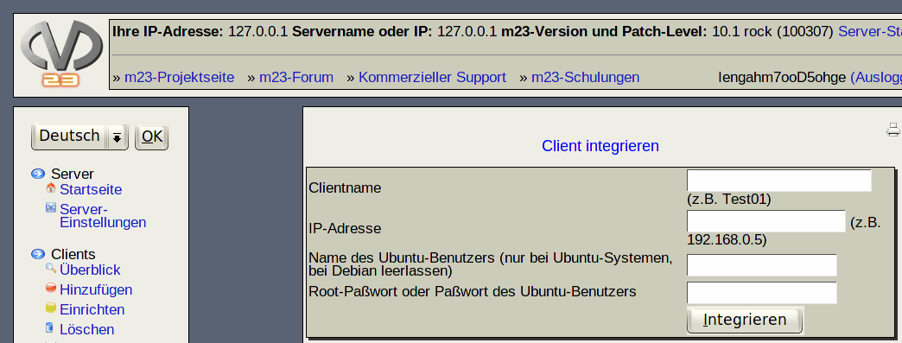

Sie können bestehende Debian-Systeme mit m23 administrieren, indem Sie sie integrieren und somit m23 bekannt machen. Für eine reibungslose Integration ist es erforderlich, daß der Client komplett hochgefahren und über das Netzwerk erreichbar ist. Nun werden nur noch drei Angaben benötigt:
- Clientname: Geben Sie hier einen Namen an, über den der Client im m23-Server verwaltet werden soll. Dieser Name muß nicht zwangsläufig mit dem Hostnamen des Clients identisch sein.
- IP-Adresse: Dies ist die (ggf. temporäre) IP-Adresse des Clients.
- Name des Ubuntu-Benutzers (nur bei Ubuntu-Systemen, bei Debian leerlassen): Geben Sie hier einen Benutzernamen an, der auf dem Rechner ein Konto besitzt und mit dem man sich per SSH einloggen kann. Außerdem muß dieser Benutzer mittels sudo und seinem Paßwort Befehle als root ausführen können. Dies wird nur bei Computern benötigt, auf denen Ubuntu installiert ist oder bei denen das Einloggen als root deaktiviert ist.
- Root-Paßwort oder Paßwort des Ubuntu-Benutzers: Das aktuelle Root-Paßwort des Clients bei Debian-Systemen oder das Paßwort eines Benutzers bei Ubuntu-Systemen. Sie können dieses Feld allerdings auch leer lassen, wenn Sie eine manuelle Integration vorziehen.
- Der Client verwendet eine dynamische IP (DHCP): Setzen Sie hier den Haken, wenn der zu integrierende Rechner seine Netzwerkeinstellungen per DHCP bezieht.
Klicken Sie anschließend auf ''Integrieren''. Die Integration läuft nun im Hintergrund.
Unterabschnitte
root
2018-05-08